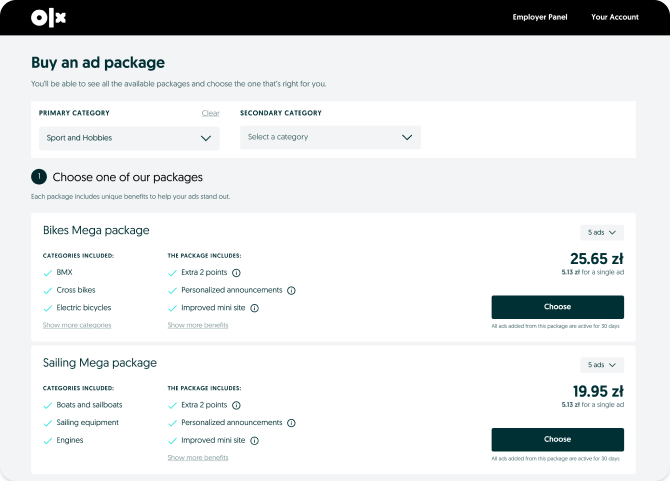

#1 Hypothesis
Real-time offer view
Users would appreciate if they can simultaneously browse Ad packages while choosing the category in which they’d like to post ads, making the overall process dynamic.
Offers are shown based on availability. Categories are seen upfront on the offer view.